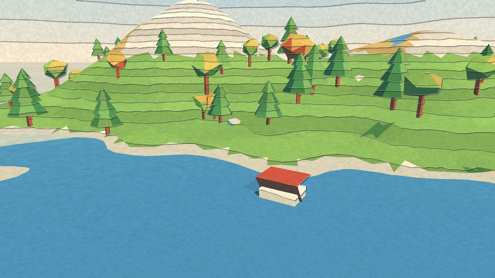
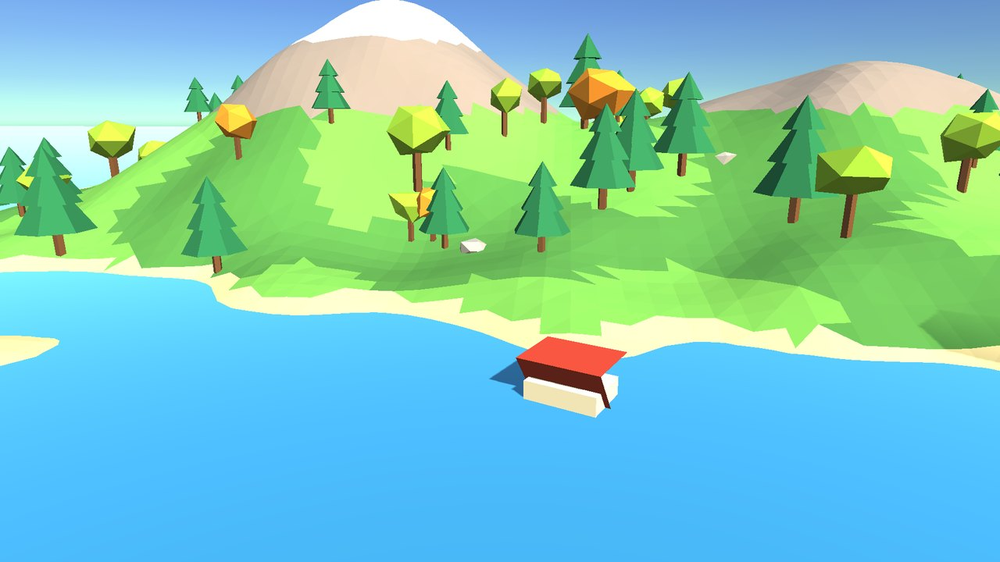
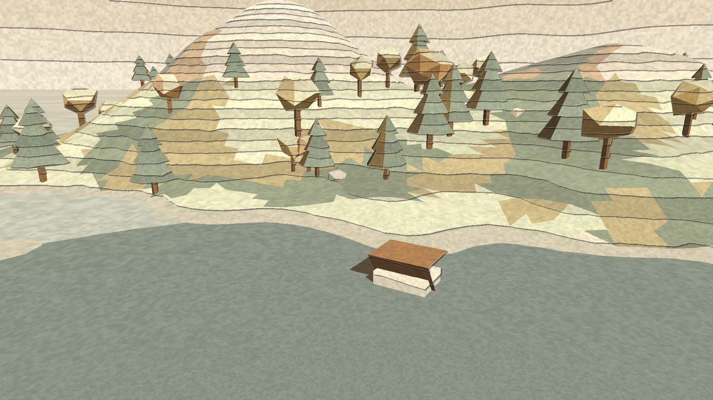
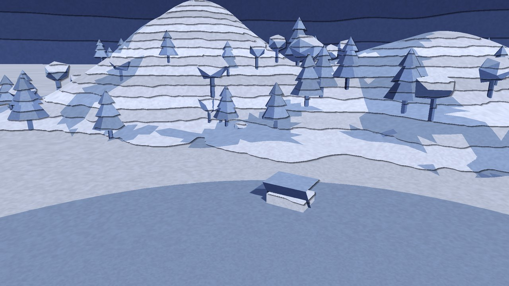
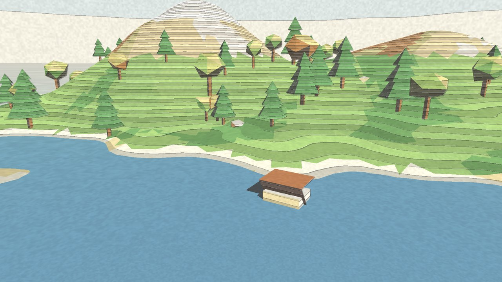
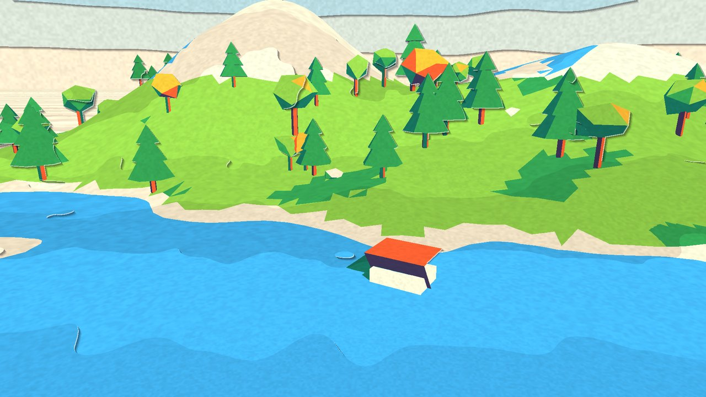
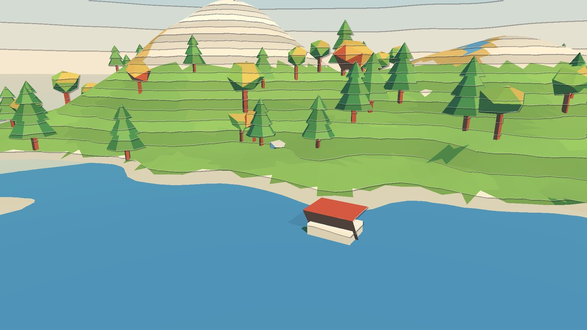

|
|
|
|
Built-In Render Pipeline: add the DioramaPostProcess component to your Camera.
Universal Render Pipeline (URP): open your active Universal Renderer Data asset, click Add Renderer Feature and choose Diorama Post Process Feature.
You can also open one of the sample scenes in Samples/: a 3D low poly valley for each pipeline. For the URP sample, assign Samples/Resources/URP/URP 17 Diorama Renderer in Project Settings > Graphics, or add the feature to your own renderer.
In the Preset Manager at the top of the Inspector, drag one of the presets from Samples/Presets into Active Preset and click Load:
| Preset | Look |
|---|---|
| Paper Craft | Bright colored cards over a soft paper sky. |
| Kraft | Cardboard and wrapping paper browns, strong fiber. |
| Night Theater | Blue shadow-theater cards under a night sky. |
| Topographic | Many thin layers with clean cuts, like a relief map. |
| Pop-Up Book | Saturated cards cut by distance to the camera, like theater flats, with long shadows. |
| Mobile | Paper Craft with shorter shadows, no paper fiber and no Temporal Stability. |
Paper Craft


Kraft

Night Theater

Topographic

Pop-Up Book

Mobile

Every field has a reset button next to it. Sizes in pixels refer to 1080p and scale with the resolution.
In World Height mode the cuts are functions of the world position, so they stay on the terrain during camera moves. The paper fiber is attached to the surfaces and keeps a constant size on screen.
Temporal Stability (default 0.5) blends the current frame with the previous one, reprojected with the depth buffer. Set it to 0 for static images.
Tip: enable anti-aliasing (MSAA) and soft shadows, and use alpha clipping (cutout) instead of transparency for foliage.
See also: Classes for the full class reference.
Changelog: Changelog